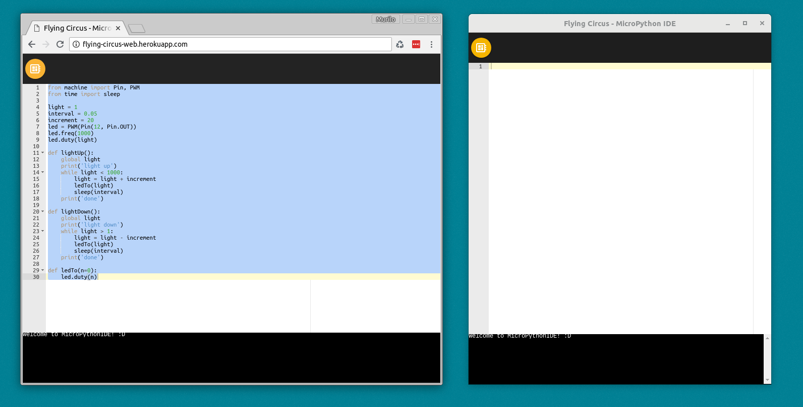

Flying Circus - MicroPython IDE
Downloading Flying Circus
You can download the latest Electron app for Linux, Raspberry Pi, Windows or OSX here.
Or you can use it on your browser (WebREPL only) here.
What is Flying Circus?
Flying Circus is an open source/free software you can download or use on your browser to connect, execute and save code to a board running MicroPython (REPL).
So far Flying Circus can connect to your board via WebSocket, if your MicroPython has WebREPL configured, and the Electron app version can connect also via USB Serial if your computer can recognize the board as a serial device (check if the correct drivers are installed, if needed).
Once connected you can execute code from the text editor using the "play" and "stop" buttons on the toolbar or by using the console.
On the toolbar, there are 2 groups of buttons. The first one contains the "connect", "play", "stop" and "reset" button. On the second group you will find the "list files", "save file", "load file" and "delete file" on your board.
Depending on what type of connection you have established with your board (websocket or serial) the second group of button may behave differently. On a serial connection all the results from file operations will be printed on the console. On the websocket connection it will be a mix: list files will print the files on the console but the load file will load the file content on the text editor.
IMPORTANT: Saving files depends on the board having the binascii module installed. On the ESP32 version of MicroPython you download from MicroPython's website it comes installed but on the ESP8266 it doesn't. While this is not fixed, please use another tool such as Adafruit's ampy to load binascii to your board.
Source code
You only need to care about this session if you are planning to somehow modify or hack Flying Circus (I strongly encourage you to do it!).
Flying Circus is made out of many packages and components. The main packages are:
-
flying-circus-connection-websocket: A websocket connection class that exposes the methods expected by the UI. It should work both on the browser and on a nodejs environment. -
flying-circus-connection-serial: A USB Serial connection class that exposes the methods expected by the UI. This class will only work on a nodejs environment. -
flying-circus-ui: The front-end for Flying Circus. It's a Polymer 2.6 application with a few custom components but mostly "paper" and "iron" components. -
flying-circus-web: A webserver that hostsflying-circus-uiand connect it to theflying-circus-connection-websocket. No USB Serial is available yet. -
flying-circus-electron: An Electron app that wraps theflying-circus-uiconnecting it toflying-circus-connection-websocketandflying-circus-connection-serial.